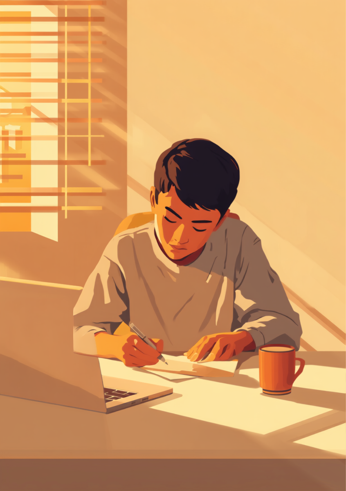
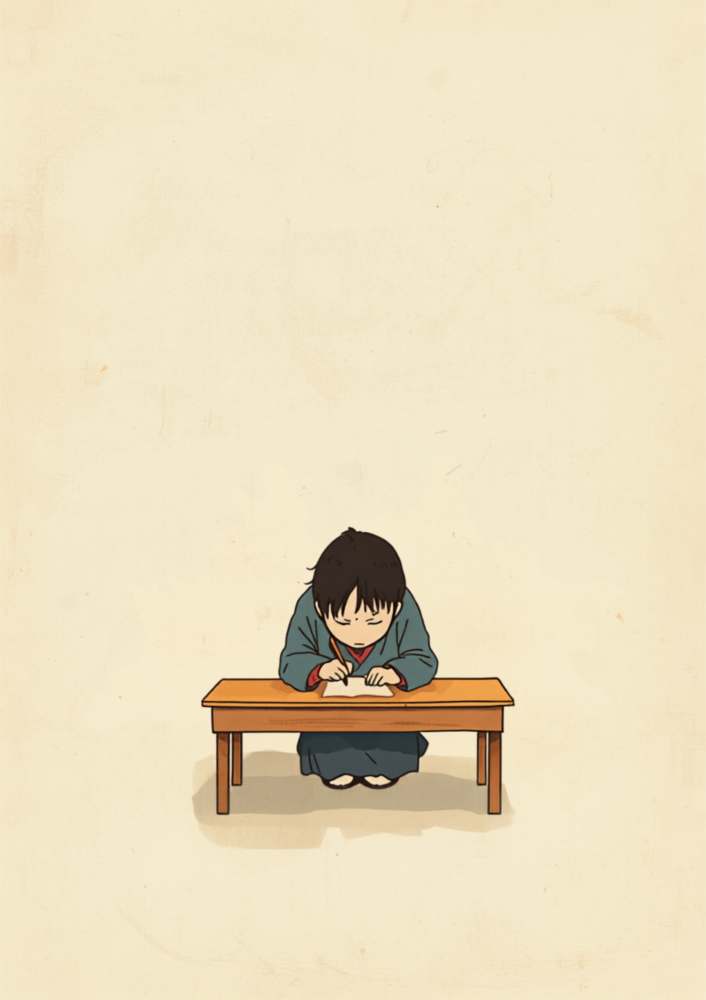
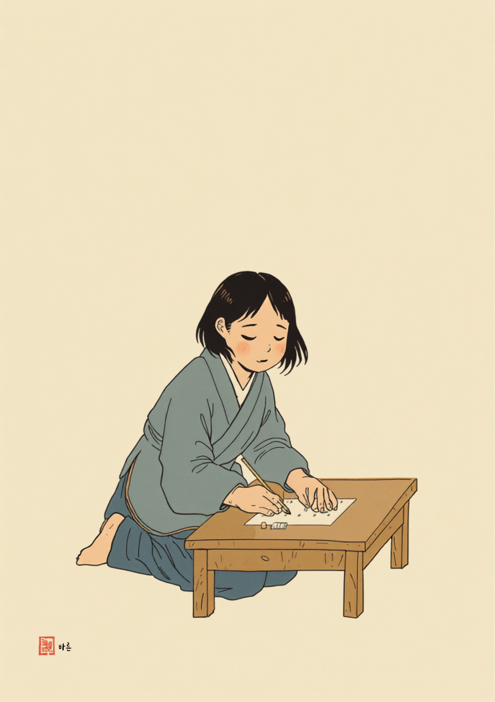
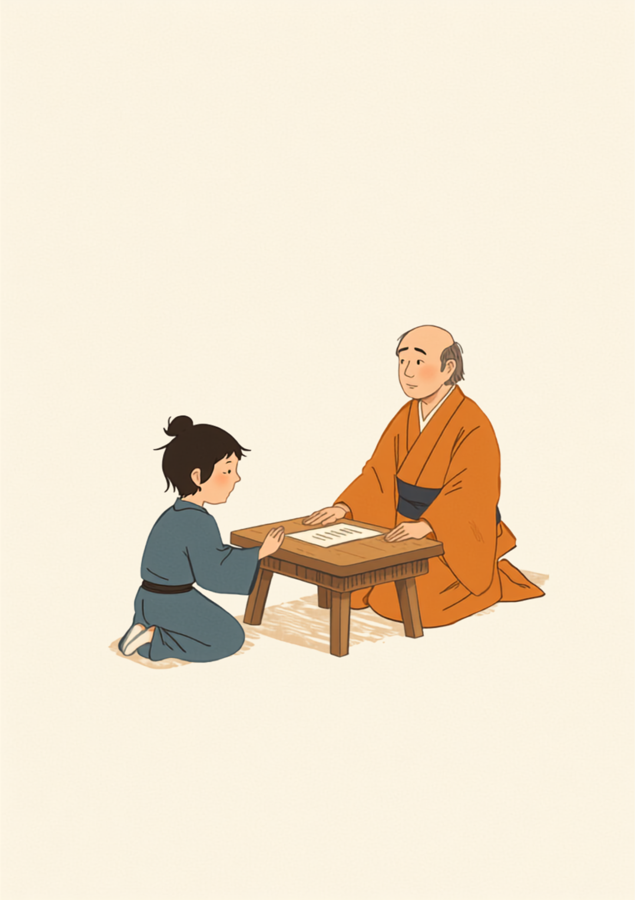

若年性パーキンソン病は、40代や50代よりも早い年代で診断されることがある。
それでも職場では「思ったより元気そうだね」で片づけられてしまう。
この記事では、書いているうちに文字が小さくなっていく「小字症」という症状、オン・オフの波との付き合い方、職場への伝え方、使える制度を、当事者の声とともに書いていく(2026年9月時点の情報です)。

「なんで、こんな字を書いたんだろう」書いているうちに小さくなる小字症
これは小字症って呼ばれる、パーキンソン病でみられる症状のひとつ。書く動きが繰り返されるうちに、無意識にその大きさを保つことが難しくなっていくって言われてるよ。まめざる
あるメモを見せてもらったことがある。
会議の最初の行は、いつもと変わらない大きさだった。
下にいくにつれて、文字がどんどん縮んでいく。
最後の数行は、ほとんど読めない。
「これ、自分でもびっくりするんです。書いてるときは気づかなくて、あとで見返して、なんでこんな字を書いたんだろうって」
書いている本人には、縮んでいく字が見えていない。
・署名
・伝票
・申請書類…
仕事には、字を書く場面がいくつも隠れている。
小字症は気合いや集中力の問題ではありません。
それでも周りには「雑に書いている」「急いでいる」ように映ってしまう。
うまく書けない自分を、何度も見返すことになる。
それが一番しんどいという声を、よく聞くよ。
「37歳のときに診断されました。最初は自分の字が汚くなったなって思ってただけだったんです。でも書類の記入欄に途中から文字が入らなくなるくらい小さくなってて、総務の人に『すみません、ここ読めないんですけど』って真顔で言われたときはさすがに凹みました。今はチェックリストとか定型フォームで済む仕事を増やしてもらって、手書きがどうしても必要なところは同僚にお願いすることもあります。慣れるまで半年くらいかかりましたけど、今は少しずつ割り切れるようになってきました。」
白紙ではなく罫線や目印のある紙にする。大きめのマスに書く。単語だけで済ませる。こうした小さな工夫だけで、驚くほど書きやすくなることがあるみたい。効果の出方には個人差があるから、リハビリの専門職と一緒に、自分に合うやり方を探している人が多いみたい。
オン・オフの波と服薬タイミング、仕事のリズムをどう組み立てるか
薬が効いている時間をオン、効果が切れて症状が強く出る時間をオフと呼ぶ。
この波は、1日の中で何度も訪れる。
特にウェアリング・オフと呼ばれる状態がある人の場合、服薬時間がたった15分ずれるだけで、その後の数時間がまるごと変わってしまうこともあるみたい。
「30代前半で診断されて、正直まだ受け止めきれてない部分もあります。経理の仕事をしてるんですけど、伝票の記入で手が思うように動かなくて、金額の桁を書き間違えたことが2回続いたんです。さすがにまずいと思って上司に相談しました。言い出すのがめちゃくちゃ怖かったんですけど、話してみたら『じゃあ入力の部分は別の人にお願いしようか』ってあっさり調整してもらえて。拍子抜けしたのと同時に、もっと早く言えばよかったなと思いました。」
集中作業を服薬直後の時間帯に寄せる。生活のリズムそのものを、薬に合わせて組み直している人もいる。オン・オフの波は、本人にしか実感できない。だからこそ「調子が変わりやすい時間帯」として先に周りに伝えておくと、急な変化があったときも説明がずっと楽になるという声を聞くよ。
職場にどう伝える、開示のタイミングという難しい選択
診断されてすぐ伝えるか、症状が目立ち始めてから伝えるか。
正直、決まった正解はない。早く伝えれば、業務調整を早くから相談できる。でも症状がまだ軽いうちだと「そこまで大変そうに見えないのに」と受け止められにくいこともある。どちらを選んでも間違いではなく、今の状況や職場との関係性で変わってくるものだと思う。
伝える範囲を最小限に絞るという考え方
病名や治療の詳細を、全部話す必要はない。業務に関わる具体的な場面だけに絞って伝えたほうが、お互い楽なことが多いみたい。
- 「手書きの書類は、確認のため二重チェックをお願いしたいです」
- 「午後の遅い時間帯は、体調が変わりやすいので静かな作業を優先させてください」
- 「会議の時間を、可能であれば午前中に寄せていただけると助かります」
- 「声をかけてほしいのは明らかに様子がおかしいときで、普段は気にしなくて大丈夫です」
働き方を選び直すという選択肢
体力を大きく使う立ち仕事や、細かい手作業が中心の業務は、症状の進み方によっては続けにくくなっていくこともある。だからといって、今すぐ辞める必要があるとは限らない。業務の一部を調整してもらう。部署を異動する。在宅勤務を取り入れる。今の職場の中にも、まだ試していない選択肢が残っているかもしれない。
使える制度と、一人で抱えないための相談先
身体障害者手帳という選択肢
パーキンソン病は、運動機能への影響の程度によって身体障害者手帳(肢体不自由)の対象になる場合がある。精神症状が強く出て、社会生活や就労がつらくなっている場合は、精神障害者保健福祉手帳の対象になることも。等級や対象範囲は人によって違うから、詳しくは主治医や自治体の障害福祉窓口に聞いてみてほしい(2026年9月時点の情報です)。
指定難病の医療費助成制度
パーキンソン病は国の指定難病のひとつ。症状の重症度など一定の基準を満たせば、医療費助成の対象になることがある。障害者手帳とは別の制度だから、両方を別々に確認しておく必要がある。申請方法や基準の詳細は、自治体や難病相談支援センターに聞くのが一番確実(2026年9月時点の情報です)。
相談できる窓口
- 主治医・神経内科(服薬スケジュールや、働き方についての意見書の相談)
- 職場に選任されている産業医(50人以上の事業場に選任義務あり)
- 難病相談支援センター(指定難病の医療費助成や生活面の相談)
- 就労移行支援事業所(体調管理を含めた就労準備や職場との調整)
それだけは、はっきり言える。
「うまく書けない」を一人で抱えず、伝えられる範囲から少しずつ周りに渡していく。それは、決して大げさなことじゃない。
よくある質問

手が思うように動かない。
字が、どんどん小さくなっていく。

白紙をやめて、線や目印のある紙にしてみる。

「手書きが大変で」と、思い切って伝えてみる。
「チェックリストでいいよ」
まわりが、そう応えてくれた。
関連記事
この記事に、聞いてみたいことはありますか？
「自分の場合はどうなんだろう」と思ったことを、気軽に書いてみてください。いただいた質問は個別にお返事したうえで、匿名で記事にすることがあります。
mimemime代表。就労支援の現場経験をもとに、障がいのある方の働く不安に寄り添う記事を執筆。